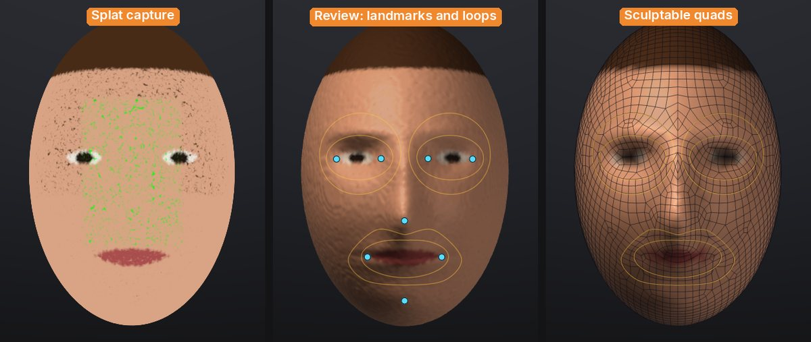
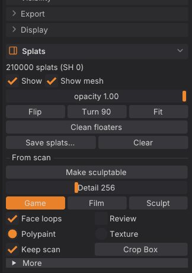

From scan to sculptable mesh
A Gaussian-splat capture looks great but you can't sculpt, rig or animate it. Make sculptable turns it into a clean SubTool you can: a watertight surface with the floaters and background gone, quad topology at the polygon budget you choose, edge loops round the eyes and mouth when the capture is a head, and the capture's colours as polypaint or a texture. One click, in the background, with the splats kept next to the result.


One click#
-
Load a capture (see Gaussian splats): File > Open... or drop a
.ply,.splat,.glbor.usdzonto the window. Place it with Flip, Turn 90 and Fit if it arrives upside down. - For a head, turn the view so you look at the face, roughly from the front (within about 40 degrees is enough). The face is looked for from the current view.
- In the Splats palette, under From scan, click Make sculptable.
A progress bar and Cancel show while it works. When it's done:
- a new SubTool named after the capture holds the sculptable mesh, and is active;
- a hidden "<name> Scan" SubTool keeps the dense voxel surface it was made from (turn off Keep scan if you don't want it);
- the splats are hidden, not deleted (Show in the Splats palette brings them back);
- an untouched starting sphere is hidden too.
No capture at hand? Try a test head in the Splats palette (shown while no splats are loaded) loads a built-in one: a stylised head as 200,000 coloured splats with a few floaters and the hidden inside splats real captures have. splat_test_capture kind=object loads a mug with a thin handle instead.


The options#
| Control | What it does |
|---|---|
| Detail | How finely the surface follows the capture, in voxels across the subject (96 to 512, default 256). Higher keeps thinner parts and more detail and takes longer |
| Game / Film / Sculpt | The polygon budget. Game: about 4,000 quads, for real-time characters and props. Film: about 12,000 quads, for close-ups and smooth deformation. Sculpt: a 2,000-quad base with two subdivision levels, the scan's detail projected onto the top level, so you sculpt with levels straight away |
| Face loops | When the capture is a head: find the eyes, nose, mouth and chin and give QRemesh edge loops round the eyes and mouth and along the nasolabial folds, mirrored across the face (see below) |
| Review | Stop after the scan to check the face landmarks and the loops before remeshing |
| Polypaint / Texture | Where the capture's colours go: the vertices (polypaint), or a 2K texture on automatic UVs (sharp colour on a light mesh, for games and exports) |
| Keep scan | Keep the dense voxel surface as a hidden "<name> Scan" SubTool, to ProjectAll more detail from later |
| Crop Box | Only the splats inside the box count (see below) |
| More > Min Opacity | Splats fainter than this are ignored (haze and floaters are usually faint). Default 0.2 |
| More > Close Gaps | Seal gaps up to this many voxels between splats. Default 2 |
| More > Fill holes | Fill big holes such as the open bottom of a subject that stood on a table. Turn it off for open cavities like a cup |
| More > All pieces | Keep every solid piece instead of only the largest (the floaters come back too) |
Hold Ctrl and point at any of them for help; F3 finds Make sculptable, Finish, Place by hand and Crop Box by name.
Face loops: animation topology for heads#
Faces deform around the eyes and the mouth, so animation topology has rings of edges there and a loop from the nose down past the mouth corners (the nasolabial fold), the same on both sides. With Face loops on, Make sculptable looks for a face on the scan as seen from the current view: a depth and colour picture of it, the middle line where it is mirror-symmetric, the nose as the strongest bump on that line, the eyes as a matching pair of hollows (and darker spots) above it, the line between the lips below it, then the chin. From those eight landmarks (the corners of both eyes, the nose tip, the mouth corners, the chin) it draws QRemesh Guides for QRemesh to follow:
- a ring round each eye, and a bigger one round the eye socket when the polygon budget is high enough for it;
- a ring round the lips;
- the nasolabial loop: from each side of the nose down the fold past the mouth corner and under the lower lip;
- all of them mirrored across the face, and QRemesh's symmetry on, so both halves get the same edge flow.
The guides stay on the result SubTool, so you can QRemesh it again at another density (Geometry > QRemesh) and the loops come back. Small loops are left out at low budgets, where they couldn't come out as clean rings.
If no face is found (the status bar says why), the result is remeshed without face loops. Turn the view to face the head and run it again, or use Review and place the landmarks by hand.
Review and nudge the landmarks#
With Review on, Make sculptable stops after the scan: the "<name> Scan" SubTool shows with the landmarks as blue dots and the guide loops as orange lines.
- Drag a dot to move a landmark onto the right spot. Its partner on the other side follows (mirrored), and the loops are rebuilt when you let go.
- Place by hand asks for the eight landmarks one click at a time (the panel and the cursor say which is next): the outer and inner corner of the eye on the left of the screen, the inner and outer corner of the other eye, the nose tip, the left and right mouth corners, the chin.
- Find again looks for the face again from the current view.
- Finish remeshes the scan along the loops and colours it; Back leaves the review and keeps the scan.
The crop box#
Captures usually include the ground, a table or the room. Make sculptable keeps only the largest solid piece, which drops floaters, but a table the subject stands on is joined to it. Click Crop Box: a yellow box appears round the capture with a handle on each face. Drag a handle to move that face (drag the bottom one up to cut the table away), then Make sculptable: only the splats inside the box count. The box shows while the splats are shown; click Crop Box again to turn it off.
What happens inside#
- Surface. Every Gaussian adds its opacity-weighted density to a voxel grid (in parallel, with the same result on any number of threads). Where the density is high enough is the shell of the subject; small gaps close, small separate pieces of shell (floaters) are dropped, and space boxed in by the shell on five of six sides counts as inside, which seals big holes such as an open bottom. The outside is flooded from the edges, the largest solid piece is kept, and a smooth watertight surface is made from it.
- Colour. Each vertex (or texel) takes the colour of the splats around it, weighted by their opacity and distance. Splats behind the surface, inside the subject, are faded out: trained captures fill the inside with splats of any colour.
- Topology. QRemesh rebuilds the scan as quads at the budget's polygon count, along the face guides, with symmetry. Sculpt then divides it twice and projects the scan onto the top level (as ProjectAll does).
Speed#
Measured on an M1 Pro laptop (10 cores, 2021) with the built-in test head at Film density, from click to the finished SubTool:
| Splats | Detail 256 | Detail 384 | Detail 512 | Peak memory (512) |
|---|---|---|---|---|
| 1 million | 3.4 s (surface 1.3 s) | 5.5 s (surface 2.6 s) | 8.8 s (surface 5.1 s) | 1.0 GB |
| 5 million | 7.2 s (surface 4.2 s) | 9.1 s (surface 5.6 s) | 13.2 s (surface 8.0 s) | 1.2 GB |
The rest of the time is QRemesh and colour. Everything runs on the CPU, so a studio PC with more cores is faster; no GPU or CUDA is needed.
How good is it?#
What works well:
- Watertight, manifold surfaces every time (no holes, no non-manifold edges), with floaters and stray background pieces dropped and open bottoms sealed.
- Faithful colour: on test captures with known colours the transferred polypaint is within a few percent of the original, and the wrongly coloured splats inside the subject don't bleed through.
- Clean quads (97% or more) with symmetric rings round the eyes and mouth on faces it finds.
- Thin parts survive down to a few voxels across (a mug handle at Detail 160 stays a handle, its hole open).
What to expect:
- The scan has a fine ripple (voxel-scale, a little like orange peel) where the capture's splats are sparse; the quad result smooths it out, but the Sculpt preset projects it onto the top level, where the Smooth brush takes it away.
- The surface sits about a voxel outside the splats (the shell's thickness). Raise Detail to make that smaller.
- The face finder works from geometry and colour, not a trained model: it is reliable on clear faces seen from the front (busts, maquettes, game heads) and can miss on heavily stylised faces, closed-eye or beard-covered ones, profiles, or a head that isn't upright in the view. Then use Review and Place by hand.
- Fill holes also fills deep open cavities (the inside of a cup, an open mouth); turn it off for those.
- Hair and fur become a solid shell, as with any surface reconstruction.
- Splat captures carry view-dependent colour; Make sculptable uses the base colour of each splat (no reflections or highlights baked in), which is what you want for a sculpt.
From scripts#
The same pipeline runs from the console, sculptforge-cli, MCP and Python:
| Command | What it does | Key parameters |
|---|---|---|
splat_to_mesh | Make sculptable | detail (32 to 768, default 256; resolution is the same), preset (game, film or sculpt), target (quads; 0 keeps the voxel surface), levels, face_guides (auto or off), landmarks (JSON, instead of finding them), front, up (the face's directions, default "0 0 1" and "0 1 0"), color (polypaint, texture or none), texture_size, crop ("minx miny minz maxx maxy maxz"), min_opacity, keep, close, fill_holes, keep_parts, smooth, symmetry, keep_scan, stage (all, scan or finish), seed |
face_guides | Finds a face on the active SubTool (or takes landmarks) and replaces its QRemesh Guides with the face loops; the message ends with the landmarks as JSON | landmarks, front, up, target |
splat_test_capture | Loads the built-in test head or mug capture | kind (head or object), count, floaters, open_bottom |
# A scan to a textured game asset, in one go.
sculptforge-cli -c 'open path=bust.ply; splat_transform rotate_x=180 fit=true; splat_to_mesh preset=game color=texture; export_glb path=bust.glb'
# The app's review in two steps: the scan with its face guides (the message lists the landmarks found), then the
# quads along those guides.
sculptforge-cli -c 'open path=head.ply; splat_to_mesh stage=scan preset=film; splat_to_mesh stage=finish preset=film; export_glb path=head.glb'To correct the landmarks from a script, run face_guides between the two stages with landmarks= set to the JSON the scan stage printed, edited: {"eye_outer_l": [x, y, z], "eye_inner_l": [...], "eye_inner_r": [...], "eye_outer_r": [...], "nose_tip": [...], "mouth_l": [...], "mouth_r": [...], "chin": [...]} (l is the side on the left of the screen when looking at the face).
Each run in the app is echoed to the console as a splat_to_mesh line (with the landmarks when you reviewed them), so you can copy it into a batch script.
See also#
- Gaussian splats: loading, placing and saving captures
- Quad retopology and detail projection: QRemesh, QRemesh Guides and ProjectAll
- Subdivision levels: sculpting the Sculpt preset's levels
- Texture painting: painting on the Texture result